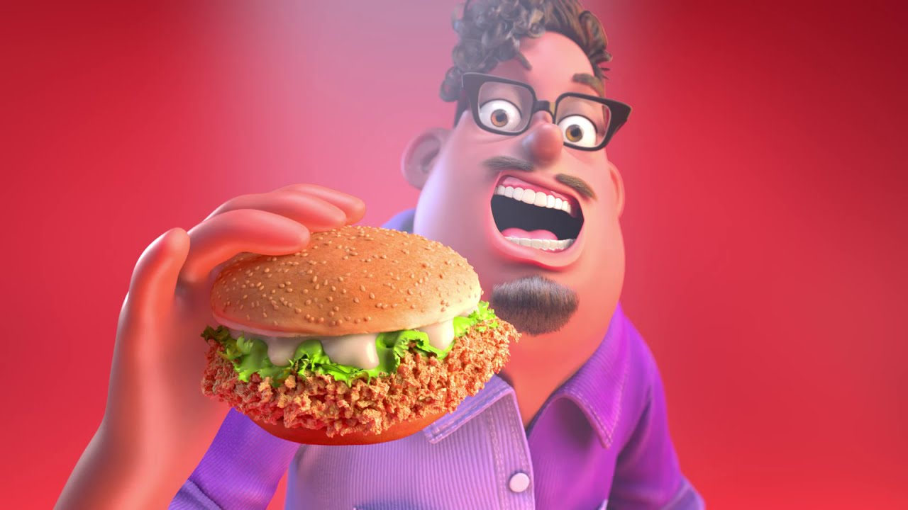

So what I did here is, I combined the thumbnail from the Grubhub Delivery Dance ad and "Pyrrha's Unholy Screaming" face from RWBY/RWBY Chibi. The meaning of this meme is to represent how cringe most people considered this ad to be. The character is screaming because the ad is unholy and cringey, representing how most of us were reacting internally to this ad. It could also represent the character in the ad's internal feelings as he performs the weird "Delivery Dance". He looks like he's having a good time, but on the inside he's actually screaming internally.

Above is the original thumbnail for the ad, which is what I used for the meme. Here is its KYM page as well, to know more about the meme. Warning, the actual ad WILL give you cancer.

And here is the original Unholy Screaming Pyrrha face. Because it does not have a KYM page as it is more of a RWBY-fandom meme than a widespread meme, I will provide a brief explanation here.
The animated series "RWBY" made by Rooster Teeth has a spinoff known as "RWBY Chibi", and one episode features a scene of the character Pyrrha Nikos reacting in surprise when suddenly greeted by the character Nora Valkyrie. The expression she makes in this moment stood out to many and soon became known as "Pyrrha's Unholy Scream", spawning many memes of it.